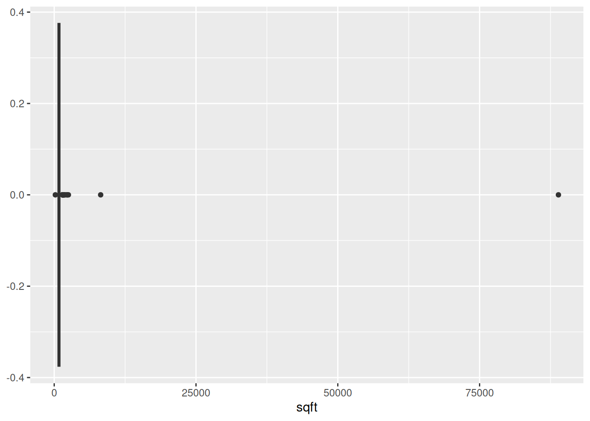

cl = read.csv("data/cl_rentals.csv")7 Data Forensics
This lesson covers a variety of ways to investigate and summarize tabular data in order to understand the data better and identify potential problems. The lesson also describes how to fix some of the most common data problems.
Learning Goals
After this lesson, you should be able to:
- Cleaning and Forensics:
- Explain what it means for a data set to be “tidy”
- Convert columns to appropriate data types
- Locate and count missing values in a data set
- Explain what it means for a value to be an “outlier”
- Locate and count outliers in a data set
- Statistical Summaries:
- Explain the location statistics mean, median, and mode
- Explain the scale statistics range and standard deviation
- Apply Functions
- Use apply functions to compute summaries of multiple columns
- Use the split-apply pattern to compute grouped summaries
7.1 Structural Summaries & Cleaning
Whenever you load a data set into R, your next step should be to investigate the data’s structure. This step is important because it can help you identify whether:
- The data was loaded correctly
- There are structural problems with the data that will make it difficult to use if they aren’t fixed
Section 3.7.2 and Section 5.4.1 demonstrated several functions for getting structural summaries of data. Some of these are:
strto get a detailed structural summaryhead,tailto preview the datanrow,ncol,dim,lengthto get dimension informationnames,colnames,rownamesto get element namesclass,typeofto get classes and types
Let’s look at some examples using a data set collected from the classified advertisements website Craigslist. The data set contains information from ads for rentals in the Sacramento area. First we need to load the data set:
Now we can use the str function to check the classes of the columns:
str(cl)'data.frame': 2987 obs. of 20 variables:
$ title : chr "$1,125 / 1br - 550ft2 - 1Bedroom Prime Location -2520 S Limited Access/Gated $1125 Avail Now (2520 S St)" "$1,449 / 1br - 680ft2 - 1x1 with washer & dryer in unit! Move in ready! (The Phoenix/Sacramento/Folsom/SF)" "$1,449 / 1br - 680ft2 - 1x1 with washer & dryer in unit! Move in ready! (The Phoenix/Sacramento/Folsom/SF)" "$1,479 / 1br - 680ft2 - 1x1 with washer & dryer in unit! Move in ready! (The Phoenix/Sacramento/Folsom/SF)" ...
$ text : chr "QR Code Link to This Post\n \n \n* SEE MY OTHER MIDTOWN 1 bedroom apts-text for web site\n*An"| __truncated__ "QR Code Link to This Post\n \n \n Lease our 1x1 Apartment with Che starting at $1449+ Pric"| __truncated__ "QR Code Link to This Post\n \n \n Lease our 1x1 Apartment with Che starting at $1449+ Pric"| __truncated__ "QR Code Link to This Post\n \n \n Lease our 1x1 Apartment with Che starting at $1479+ Pric"| __truncated__ ...
$ latitude : num 38.6 38.6 38.6 38.6 38.6 ...
$ longitude : num -121 -121 -121 -121 -121 ...
$ city : chr "2520 S St" "The Phoenix/Sacramento/Folsom/SF" "The Phoenix/Sacramento/Folsom/SF" "The Phoenix/Sacramento/Folsom/SF" ...
$ date_posted : chr "2021-02-04 15:03:12" "2021-03-02 12:41:17" "2021-03-02 13:26:17" "2021-03-03 10:02:05" ...
$ date_updated: chr "2021-03-03 08:41:39" NA NA NA ...
$ price : int 1125 1449 1449 1479 1414 1441 1615 1660 1877 1611 ...
$ deleted : logi FALSE FALSE FALSE FALSE FALSE FALSE ...
$ sqft : int 550 680 680 680 680 680 816 816 916 916 ...
$ bedrooms : int 1 1 1 1 1 1 2 2 2 2 ...
$ bathrooms : num 1 1 1 1 1 1 1 1 2 2 ...
$ pets : chr NA "both" "both" "both" ...
$ laundry : chr "shared" "in-unit" "in-unit" "in-unit" ...
$ parking : chr "off-street" "covered" "covered" "covered" ...
$ craigslist : chr "sacramento" "sacramento" "sacramento" "sacramento" ...
$ shp_place : chr "Sacramento" "Sacramento" "Sacramento" "Sacramento" ...
$ shp_city : chr "Sacramento" "Sacramento" "Sacramento" "Sacramento" ...
$ shp_state : chr "CA" "CA" "CA" "CA" ...
$ shp_county : chr "Sacramento" "Sacramento" "Sacramento" "Sacramento" ...Often when you load a new data set, some of the columns won’t have the correct data type (or class) for what you want to do. For instance, in the Craigslist data, the pets, laundry, and parking columns all contain categorical data, so they should be factors.
You can convert these columns to factors with the factor function from Section 5.6:
cl$pets = factor(cl$pets)
cl$laundry = factor(cl$laundry)
cl$parking = factor(cl$parking)There’s another way we could’ve done this that uses only two lines of code, no matter how many columns there are:
cols = c("pets", "laundry", "parking")
cl[cols] = lapply(cl[cols], factor)We’ll learn more about the lapply function in Section 7.3.
You can use whichever approach is more convenient and makes more sense to you. If there were other columns to convert, we’d go through the same steps with the appropriate conversion function.
R provides as. functions to convert to the most common data types. For instance, as.character converts an object to a string:
x = 3.1
class(x)[1] "numeric"y = as.character(x)
y[1] "3.1"class(y)[1] "character"The read.csv function does a good job at identifying columns of numbers, so it’s rarely necessary to convert columns of numbers manually. However, you may have to do this for data you got some other way (rather than loading a file). For instance, it’s common to make these conversions when scraping data from the web.
It’s also a good idea to convert categorical columns into factors with the factor function, and to convert columns of dates into dates (more about this in the next section).
7.1.1 Dates
There several built-in functions and also many packages for date processing. In particular, there are three Tidyverse packages for processing dates and times:
- lubridate, the primary package for working with dates and times
- hms, a package specifically for working with times
- clock, a new package for working with dates and times
We’ll focus on the lubridate package. As always, you’ll have to install the package if you haven’t already, and then load it:
# install.packages("lubridate")
library("lubridate")
Attaching package: 'lubridate'The following objects are masked from 'package:base':
date, intersect, setdiff, unionThe most common task is to convert a string into a date or time class. For instance, when you load a data set, you might have dates that look like this:
dates = c("Jan 10, 2021", "Sep 3, 2018", "Feb 28, 1982")
dates[1] "Jan 10, 2021" "Sep 3, 2018" "Feb 28, 1982"These are strings, so it’s relatively difficult to sort the dates, do arithmetic on them, or extract just one part (such as the year). There are several lubridate functions to automatically convert strings into dates. They are named with one letter for each part of the date. For instance, the dates in the example have the month (m), then the day (d), and then the year (y), so we can use the mdy function:
result = mdy(dates)
result[1] "2021-01-10" "2018-09-03" "1982-02-28"class(result)[1] "Date"Notice that the dates now have class Date, one of R’s built-in classes for representing dates, and that they print differently. You can find a full list of the automatic string to date conversion functions in the lubridate documentation.
Occasionally, a date string may have a format that lubridate can’t convert automatically. In that case, you can use the fast_strptime function to describe the format in detail. At a minimum, the function requires two arguments: the vector of strings to convert and a format string.
The format string describes the format of the dates, and is based on the syntax of strptime, a function provided by many programming languages for converting strings to dates (including R). In a format string, a percent sign % followed by a character is called a specification and has a special meaning. Here are a few of the most useful ones:
| Specification | Description | January 29, 2015 |
|---|---|---|
%Y |
4-digit year | 2015 |
%y |
2-digit year | 15 |
%m |
2-digit month | 01 |
%B |
full month name | January |
%b |
short month name | Jan |
%d |
day of month | 29 |
%% |
literal % | % |
You can find a complete list in ?fast_strptime. Other characters in the format string do not have any special meaning. Write the format string so that it matches the format of the dates you want to convert.
For example, let’s try converting an unusual time format:
odd_time = "6 minutes, 32 seconds after 10 o'clock"
fast_strptime(odd_time, "%M minutes, %S seconds after %H o'clock")[1] "0-01-01 10:06:32 UTC"R usually represents dates with the class Date, and date-times with the classes POSIXct and POSIXlt. The difference between the two date-time classes is somewhat technical, but you can read more about it in ?POSIXlt.
There is no built-in class to represent times alone, which is why the result in the example above includes a date. Nonetheless, the hms package provides the hms class to represent times without dates.
Once you’ve converted a string to a date, the lubridate package provides a variety of functions to get or set the parts individually. Here are a few examples:
day(result)[1] 10 3 28month(result)[1] 1 9 2You can find a complete list in the lubridate documentation.
Now let’s convert the date_updated column in the Craigslist data. It’s always a good idea to test your format string before saving the results back into the data frame:
dates = ymd_hms(cl$date_updated)
head(dates)[1] "2021-03-03 08:41:39 UTC" NA
[3] NA NA
[5] NA NA The as.Date function returns NA if conversion failed, so in this case it looks like the dates were converted correctly. Now we can save the dates back into the data frame.
cl$date_updated = dates7.1.2 Tidy Data
Many functions require data frames that are in tidy form. Before we see the requirements for a data set to be tidy, we need to define or review some terminology from statistics.
A feature (also called a covariate) is measurement of something, usually across multiple subjects. For example, we might decide to measure the heights of everyone in the class. Each person in the class is a subject, and the height measurement is a feature. Features don’t have to be quantitative. If we also asked each person their favorite color, then favorite color would be another feature in our data set. Features are usually, but not always, the columns in a tabular data set.
An observation is a set of features measured for a single subject or at a single time. So in the preceding example, the combined height and favorite color measurement for one student is one observation. Observations are usually, but not always, the rows in a tabular data set.
Now we can define what it means to be tidy. A tabular data set is tidy if and only if:
- Each observation has its own row.
- Each feature has its own column.
- Each value has its own cell.
These rules ensure that all of the values are visually organized and are easy to access with R’s built-in indexing operations. For instance, the $ operator gets a column, and in a tidy data set, columns are features. The rules also reflect the way statisticians traditionally arrange tabular data sets.
When you first look at a data set, think about what the observations are and what the features are. If the data set comes with documentation, it may help you figure this out. Since this data set is a tidy data set, we already know each row is an observation and each column is a feature.
Chapter 13 gives examples of tidy and untidy data, as well as explanations of how to make untidy data tidy.
7.2 Statistical Forensics
After investigating the data’s structure, it’s a good idea to check some basic statistical properties. This step is important because it can help you identify limitations of and patterns in the data.
Which statistics are appropriate for a given feature often depends on the type of the feature. Recall from Section 3.8 that the types statisticians typically think about are:
- Categorical
- Nominal - data separated into specific categories, with no order. For example, hair color (red, brown, blonde, …) is categorical.
- Ordinal - data separated into specific categories, with an order. For example, school level (elementary, middle, high, college) is ordinal.
- Numerical
- Discrete - integers, or a finite set of decimal numbers with no values in between. Sometimes discrete values can also be treated as ordinal. For example, month as a number (1, 2, …, 12) is discrete.
- Continuous - decimal numbers. There are no specific categories, but there is an order. For example, height in inches is numerical.
The table function, which was introduced in Section 3.7.2, is great for summarizing categorical (and sometimes discrete) data. For example:
table(cl$pets)
both cats dogs none
2511 46 31 385 What about numerical data?
Two important questions to ask about data are:
Where is it? This is the location of the data.
How spread out is it? This is the scale of the data.
Let’s use the data
x = c(-2, -1, -1, -1, 0, 2, 6)as an example.
Location is generally summarized with a number near the middle or center of the data. A few options are:
Mode - the value that appears most frequently. The mode can be calculated for any kind of data, but doesn’t work well for continuous data.
For our example, the mode of
xis -1. You can compute the mode withtable:table(x)Median - sort the data, then find the value in the middle. The median can be calculated for ordinal or numerical data.
For our example, the median is -1. Compute this with
median:median(x)Mean - the balancing point of the data, if a waiter was trying to balance the data on a tray. The mean can only be calculated for numerical data.
For our example the mean is 0.4285. Compute this with
mean:mean(x)
Adding large values to the data affects the mean more than the median:
y = c(x, 100)
mean(y)
median(y)Because of this, we say that the median is robust.
The mean is good for getting a general idea of where the center of the data is, while comparing it with the median reveals whether there are any unusually large or small values.
Scale is generally summarized by a number that says how far the data is from the center (mean, median, etc…). Two options are:
Standard Deviation - square root of the average squared distance to the mean (the distance from a point to a mean is called a deviation). You can think of this as approximately the average distance from a data point to the mean. As a rule of thumb, most of the data will be within 3 standard deviations of the mean.
You can compute the standard deviation with
sd:sd(x)Interquartile Range (IQR) - difference between the 75th and 25th percentile. The median is the 50th percentile of the data; it’s at the middle of the sorted data. We can also consider other percentiles. For instance, the 25th percentile is the value one-quarter of the way through the sorted data.
Quantile is another word for percentile. Quartile specifically refers to the 25th, 50th, and 75th percentiles because they separate the data into four parts (hence “quart-”).
You can compute quantiles with
quantile, or compute the IQR directly withIQR:quantile(x) # IQR IQR(x)
The IQR is more robust than the standard deviation.
Many of the functions for computing statistical summaries have a parameter na.rm to ignore missing values. Setting na.rm = TRUE is often useful when you’re just trying to do an initial investigation of the data. However, in a more complete analysis, you should think carefully about what the missing values mean, whether they follow any patterns, and whether there are enough non-missing values for statistical summaries to be good representatives of the data.
Finally, the summary function computes a detailed statistical summary of an R object. For data frames, the function computes a summary of each column, guessing an appropriate statistic based on the column’s data type.
7.2.1 Missing Values
If your data contains missing values, it’s important to think about why the values are missing. Statisticians use two different terms to describe why data is missing:
- missing at random (MAR)
- missing not at random (MNAR) - causes bias!
When values are missing at random, the cause for missingness is not related to any of the other features. This is rare in practice. For example, if people in a food survey accidentally overlook some questions.
When values are missing not at random, the cause for missingness depends on other features. These features may or may not be in the data set. Think of this as a form of censorship. For example, if people in a food survey refuse to report how much sugar they ate on days where they ate junk food, data is missing not at random. Values MNAR can bias an analysis.
The default way to handle missing values in R is to ignore them. This is just a default, not necessarily the best or even an appropriate way to deal with them. You can remove missing values from a data set by indexing:
cl_no_sqft_na = cl[!is.na(cl$sqft), ]
head(cl_no_sqft_na) title
1 $1,125 / 1br - 550ft2 - 1Bedroom Prime Location -2520 S Limited Access/Gated $1125 Avail Now (2520 S St)
2 $1,449 / 1br - 680ft2 - 1x1 with washer & dryer in unit! Move in ready! (The Phoenix/Sacramento/Folsom/SF)
3 $1,449 / 1br - 680ft2 - 1x1 with washer & dryer in unit! Move in ready! (The Phoenix/Sacramento/Folsom/SF)
4 $1,479 / 1br - 680ft2 - 1x1 with washer & dryer in unit! Move in ready! (The Phoenix/Sacramento/Folsom/SF)
5 $1,414 / 1br - 680ft2 - 1x1 with washer & dryer in unit! Move in ready! (The Phoenix/Sacramento/Folsom/SF)
6 $1,441 / 1br - 680ft2 - 1x1 with washer & dryer in unit! Move in ready! (The Phoenix/Sacramento/Folsom/SF)
text
1 QR Code Link to This Post\n \n \n* SEE MY OTHER MIDTOWN 1 bedroom apts-text for web site\n*An upstairs apt @ 2520 S is coming available 3/18/21\n*I have 4 apts coming avail in midtown\n*New flooring in lower apt and redone hardwood flooring in upper unit\n*1 Bedroom lower unit in 20 unit complex (2-10 unit buildings-courtyard in middle) with manager on site\n*Gated front and back\n*9 parking spots in back\n*Laundry on site with new washers and dryers (coin op)\n*Owner pays water/sewer/garbage\n*Wall heat and window air\n*New paint and new Pergo-type wood flooring \n*Updated lighting\n*Nicely maintained building and grounds\n*$500 deposit\n*Non-Smoking/vaping Complex\n*Long time Mgr on Site\n*No dogs\n*Pictures of a like unit\n*Text/call showing Wes show contact info\n to get copy of video\n*You need to make 3X rent, have good rental history and credit score of 600 or greater to qualify-no dogs.
2 QR Code Link to This Post\n \n \n Lease our 1x1 Apartment with Che starting at $1449+ Prices Subject to change daily! \n Apartment Features: \nPrivate Balconies & Patios \nLuxury Vinyl Wood Flooring \nDesigner Interior Paint \nUpgraded cabinets and countertops \nModern white doors and trim \nModern white base boards \nEnergy efficient appliances \nSpacious bathroom \nTONS of closet and storage space \nSac State Shuttle-including Sac State Shuttle App! PET FRIENDLY - MEOW! WOOF! \n\nUpgraded Fitness Centers \nTanning Booth \nHydro Massage Table \nResident Business Center \nResort-Style Pool Furniture \nSparkling Waterfall Wall \nFire pit locations \nBeach Area for lounging \nOutdoor Recreation Area \nSand Volleyball Court \nGrilling Locations Call today to schedule your tour ... show contact info\n -or- \nStop in to visit Mon - Sat 10:00a - 5:00p for more info! :D \n\n\nCommunity Amenities: \nComplete fitness center \nFour sparkling pools \nLighted tennis courts \nFull basketball court \nWhirlpool Jacuzzi \n24 hour Emergency Maintenance Hornet Shuttle Access to Sacramento State University \n Easy Access to Public Transportation (lightrail and bus) \n Easy Access to the American River Trail And so much more! \n\n Check us out online @ www.thephoenixsacramento.com TODAY! \n Connect with us: \nFacebook = The Phoenix Apartment Living \nTwitter = @thephoenixlife Prices and availability are subject to change. Offered prices are starting prices for base rent only. Other charges, conditions, fees, and terms may apply. Equal housing opportunity provider
3 QR Code Link to This Post\n \n \n Lease our 1x1 Apartment with Che starting at $1449+ Prices Subject to change daily! \n Apartment Features: \nPrivate Balconies & Patios \nLuxury Vinyl Wood Flooring \nDesigner Interior Paint \nUpgraded cabinets and countertops \nModern white doors and trim \nModern white base boards \nEnergy efficient appliances \nSpacious bathroom \nTONS of closet and storage space \nSac State Shuttle-including Sac State Shuttle App! PET FRIENDLY - MEOW! WOOF! \n\nUpgraded Fitness Centers \nTanning Booth \nHydro Massage Table \nResident Business Center \nResort-Style Pool Furniture \nSparkling Waterfall Wall \nFire pit locations \nBeach Area for lounging \nOutdoor Recreation Area \nSand Volleyball Court \nGrilling Locations Call today to schedule your tour ... show contact info\n -or- \nStop in to visit Mon - Sat 10:00a - 5:00p for more info! :D \n\n\nCommunity Amenities: \nComplete fitness center \nFour sparkling pools \nLighted tennis courts \nFull basketball court \nWhirlpool Jacuzzi \n24 hour Emergency Maintenance Hornet Shuttle Access to Sacramento State University \n Easy Access to Public Transportation (lightrail and bus) \n Easy Access to the American River Trail And so much more! \n\n Check us out online @ www.thephoenixsacramento.com TODAY! \n Connect with us: \nFacebook = The Phoenix Apartment Living \nTwitter = @thephoenixlife Prices and availability are subject to change. Offered prices are starting prices for base rent only. Other charges, conditions, fees, and terms may apply. Equal housing opportunity provider
4 QR Code Link to This Post\n \n \n Lease our 1x1 Apartment with Che starting at $1479+ Prices Subject to change daily! \n Apartment Features: \nPrivate Balconies & Patios \nLuxury Vinyl Wood Flooring \nDesigner Interior Paint \nUpgraded cabinets and countertops \nModern white doors and trim \nModern white base boards \nEnergy efficient appliances \nSpacious bathroom \nTONS of closet and storage space \nSac State Shuttle-including Sac State Shuttle App! PET FRIENDLY - MEOW! WOOF! \n\nUpgraded Fitness Centers \nTanning Booth \nHydro Massage Table \nResident Business Center \nResort-Style Pool Furniture \nSparkling Waterfall Wall \nFire pit locations \nBeach Area for lounging \nOutdoor Recreation Area \nSand Volleyball Court \nGrilling Locations Call today to schedule your tour ... show contact info\n -or- \nStop in to visit Mon - Sat 10:00a - 5:00p for more info! :D \n\n\nCommunity Amenities: \nComplete fitness center \nFour sparkling pools \nLighted tennis courts \nFull basketball court \nWhirlpool Jacuzzi \n24 hour Emergency Maintenance Hornet Shuttle Access to Sacramento State University \n Easy Access to Public Transportation (lightrail and bus) \n Easy Access to the American River Trail And so much more! \n\n Check us out online @ www.thephoenixsacramento.com TODAY! \n Connect with us: \nFacebook = The Phoenix Apartment Living \nTwitter = @thephoenixlife Prices and availability are subject to change. Offered prices are starting prices for base rent only. Other charges, conditions, fees, and terms may apply. Equal housing opportunity provider
5 QR Code Link to This Post\n \n \n Lease our 1x1 Apartment with Juliet starting at $1414+ Prices Subject to change daily! \n Apartment Features: \nPrivate Balconies & Patios \nLuxury Vinyl Wood Flooring \nDesigner Interior Paint \nUpgraded cabinets and countertops \nModern white doors and trim \nModern white base boards \nEnergy efficient appliances \nSpacious bathroom \nTONS of closet and storage space \nSac State Shuttle-including Sac State Shuttle App! PET FRIENDLY - MEOW! WOOF! \n\nUpgraded Fitness Centers \nTanning Booth \nHydro Massage Table \nResident Business Center \nResort-Style Pool Furniture \nSparkling Waterfall Wall \nFire pit locations \nBeach Area for lounging \nOutdoor Recreation Area \nSand Volleyball Court \nGrilling Locations Call today to schedule your tour ... show contact info\n -or- \nStop in to visit Mon - Sat 10:00a - 5:00p for more info! :D \n\n\nCommunity Amenities: \nComplete fitness center \nFour sparkling pools \nLighted tennis courts \nFull basketball court \nWhirlpool Jacuzzi \n24 hour Emergency Maintenance Hornet Shuttle Access to Sacramento State University \n Easy Access to Public Transportation (lightrail and bus) \n Easy Access to the American River Trail And so much more! \n\n Check us out online @ www.thephoenixsacramento.com TODAY! \n Connect with us: \nFacebook = The Phoenix Apartment Living \nTwitter = @thephoenixlife Prices and availability are subject to change. Offered prices are starting prices for base rent only. Other charges, conditions, fees, and terms may apply. Equal housing opportunity provider
6 QR Code Link to This Post\n \n \n Lease our 1x1 Apartment with Che starting at $1441+ Prices Subject to change daily! \n Apartment Features: \nPrivate Balconies & Patios \nLuxury Vinyl Wood Flooring \nDesigner Interior Paint \nUpgraded cabinets and countertops \nModern white doors and trim \nModern white base boards \nEnergy efficient appliances \nSpacious bathroom \nTONS of closet and storage space \nSac State Shuttle-including Sac State Shuttle App! PET FRIENDLY - MEOW! WOOF! \n\nUpgraded Fitness Centers \nTanning Booth \nHydro Massage Table \nResident Business Center \nResort-Style Pool Furniture \nSparkling Waterfall Wall \nFire pit locations \nBeach Area for lounging \nOutdoor Recreation Area \nSand Volleyball Court \nGrilling Locations Call today to schedule your tour ... show contact info\n -or- \nStop in to visit Mon - Sat 10:00a - 5:00p for more info! :D \n\n\nCommunity Amenities: \nComplete fitness center \nFour sparkling pools \nLighted tennis courts \nFull basketball court \nWhirlpool Jacuzzi \n24 hour Emergency Maintenance Hornet Shuttle Access to Sacramento State University \n Easy Access to Public Transportation (lightrail and bus) \n Easy Access to the American River Trail And so much more! \n\n Check us out online @ www.thephoenixsacramento.com TODAY! \n Connect with us: \nFacebook = The Phoenix Apartment Living \nTwitter = @thephoenixlife Prices and availability are subject to change. Offered prices are starting prices for base rent only. Other charges, conditions, fees, and terms may apply. Equal housing opportunity provider
latitude longitude city date_posted
1 38.5728 -121.4675 2520 S St 2021-02-04 15:03:12
2 38.5511 -121.4068 The Phoenix/Sacramento/Folsom/SF 2021-03-02 12:41:17
3 38.5511 -121.4068 The Phoenix/Sacramento/Folsom/SF 2021-03-02 13:26:17
4 38.5511 -121.4068 The Phoenix/Sacramento/Folsom/SF 2021-03-03 10:02:05
5 38.5511 -121.4068 The Phoenix/Sacramento/Folsom/SF 2021-03-04 08:47:21
6 38.5511 -121.4068 The Phoenix/Sacramento/Folsom/SF 2021-03-04 10:20:09
date_updated price deleted sqft bedrooms bathrooms pets laundry
1 2021-03-03 08:41:39 1125 FALSE 550 1 1 <NA> shared
2 <NA> 1449 FALSE 680 1 1 both in-unit
3 <NA> 1449 FALSE 680 1 1 both in-unit
4 <NA> 1479 FALSE 680 1 1 both in-unit
5 <NA> 1414 FALSE 680 1 1 both in-unit
6 <NA> 1441 FALSE 680 1 1 both in-unit
parking craigslist shp_place shp_city shp_state shp_county
1 off-street sacramento Sacramento Sacramento CA Sacramento
2 covered sacramento Sacramento Sacramento CA Sacramento
3 covered sacramento Sacramento Sacramento CA Sacramento
4 covered sacramento Sacramento Sacramento CA Sacramento
5 covered sacramento Sacramento Sacramento CA Sacramento
6 covered sacramento Sacramento Sacramento CA SacramentoThe na.omit function is less precise than indexing, because it removes rows that have a missing value in any column. This means lots of information gets lost.
Another way to handle missing values is to impute, or fill in, the values with estimates based on other data in the data set. We won’t get into the details of how to impute missing values here, since it is a fairly deep subject. Generally it is safe to impute MAR values, but not MNAR values.
7.2.2 Outliers
An outlier is an anomalous or extreme value in a data set. We can picture this as a value that’s far away from most of the other values. Sometimes outliers are a natural part of the data set. In other situations, outliers can indicate errors in how the data were measured, recorded, or cleaned.
There’s no specific definition for “extreme” or “far away”. A good starting point for detecting outliers is to make a plot that shows how the values are distributed. Box plots and density plots work especially well for this (you’ll learn about how to make plots in a later lesson):
library("ggplot2")
ggplot(cl, aes(x = sqft)) + geom_boxplot()Warning: Removed 347 rows containing non-finite outside the scale range
(`stat_boxplot()`).
Statisticians tend to use the rule of thumb that any value more than 3 standard deviations away from the mean is an outlier. You can use the scale function to compute how many standard deviations the elements in a column are from their mean:
z = scale(cl$sqft)
head(z) [,1]
[1,] -0.1910838
[2,] -0.1161393
[3,] -0.1161393
[4,] -0.1161393
[5,] -0.1161393
[6,] -0.1161393which(z <= -3 | 3 <= z)[1] 1261 2461Be careful to think about what your specific data set measures, as this definition isn’t appropriate in every situation.
How can you handle outliers? First, try inspecting other features from the row to determine whether the outlier is a valid measurement or an error. When an outlier is valid, keep it.
If the outlier interferes with a plot you want to make, you can adjust the x and y limits on plots as needed to “ignore” the outlier. Make sure to mention this in the plot’s title or caption.
When an outlier is not valid, first try to correct it. For example:
- Correct with a different covariate from the same observation.
- Estimate with a mean or median of similar observations. This is another example of imputing values.
For example, in the Craigslist data, we can use the text column to try to correct outliers:
message(cl$text[1261])QR Code Link to This Post
Villages of the Galleria
701 Gibson Drive, Roseville, CA, 95678
Want more information? Follow this link:
http://rcmi.aptdetails.com/49u13n
Call Now: show contact info
Roseville's Premier Luxury Condominium Rentals
This is a 1 Bedroom, 1 Bath, approximately 819 Sq. Ft.
Signature Collection
This collection of fully renovated homes is limited to a select few. These unique homes are renting quickly.
The beautifully remodeled floor plan offers an entertainment style kitchen, gracious living area, formal dining room with access to your outdoor balcony, designer two tone paint with crown molding, spacious bathroom with relaxing oval bath tub, linen closet and large vanity. The bedroom offers a sliding glass door giving you additional access to the private balcony over looking the picturesque courtyard.
Brand New Featured Interiors:
Entertainment Style Kitchen
• Beautiful warm espresso custom built cabinets with brush nickel hardware
• Opulent Granite Countertops with backsplash
• Satin finish under mount sink with disposal and upgraded Moen faucet and fixtures
• Stainless steel appliances, spacious built in microwave, multi-cycle dishwasher and self-cleaning oven
• Plant/décor cabinet ledge
• Spacious pantry and personalized custom shelving in all cabinets
• Attractive bright recessed lighting
• Private in home personal laundry room with full size washer & dryer
Living and Dining
• Hand laid tile resembling hard wood flooring
• Designer two-tone paint with white accent crown molding and baseboards
• Upgraded wooden style blinds
• Dual pane windows featuring custom framed molding
• Spacious coat closet
Bath
• Oval Roman soaking tub with surround Opulent granite walls
• Warm espresso custom built cabinets with brush nickel hardware
• Spacious linen closet and personal cabinet storage
• Hand selected Opulent Granite countertops
• Unique hand crafted above counter sink
• Contemporary waterfall faucet
• Custom wood-look framed mirror
• White glass contemporary light fixture with brush nickel base
• Upgraded brush nickel accents (towel bars and holders)
• Hand laid tile resembling hard wood flooring
Bedroom and Closet
• Rich plush carpeting
• Spacious walk in closets with personalized built in custom organizers and compartments
Other Features and Amenities
• Brilliant bright recessed lighting
• Central heat and air
• Private balcony or terrace
• Pre-wired for high-speed internet, multi-line phone and cable
• Brushed nickel hardware accents (door knobs, latches, deadbolts, locks, door knocker and light fixtures)
• Covered parking
• Additional patio storage
Select Homes Offer
• Private detached garage
• Additional linen or storage space
• Cozy Gas Fireplace with carved stone-look mantel and molding
Style, sophistication, beautiful landscaping and stunning architecture accent the Villages of the
Galleria apartment homes, located in dynamic Roseville, California. Villages of the Galleria is just minutes from the Galleria Mall and Fountains at Roseville and offers easy freeway access to downtown, Sacramento International Airport, Arco Arena and major employers such as NEC, Oracle and HP. Select from a variety of one, two or three bedroom floor plans. All apartment homes offer gracious living areas with designer two-tone paint, crown molding, large walk-in closets and in home full size washer and dryer. Enjoy the many fine conveniences offered, such as an expansive fitness center, executive business center and refreshing pool. Villages of the Galleria is the perfect place to call home.
Features
- Contemporary Recessed Lighting
- Built-In Linen Closet in Bathroom *
- Entertainment Style Kitchens
- Private Balconies and Patios
- Crown Molding Accents
- Six-Panel Interior Doors
- Custom Maple-Front Cabinetry
- Nine-Foot Ceilings
- Microwave
- Pre-Wired for High Speed Internet
- Private Garages *
- Full Size Washer/Dryer
- Pantry *
- Oval Roman Soaking Tub *
- Cozy Gas Fireplace with Mantel *
- Covered Parking *
- Spacious Walk-In Closet(s) *
- Energy-Saving Multi-Cycle Dishwasher
Community Amenities
- Community Garden
- Executive Business Center
- Sand Volleyball
- Close to Shopping
- Beautiful Landscaped Court Yards
- Playground
- Fitness Center
- Clubhouse
- Open Air Cabanas
- Easy Access to Freeways
- Pool and Spa
- Gated Community
- Professional Onsite Management w/ 24-Hour Emergency Maintenance
- Picnic Area with Barbecue
Office Hours
Monday - Friday 9:00 AM - 6:00 PM
Saturday 10:00 AM - 5:00 PM
Sunday 12:00 PM - 5:00 PM
Pet Policy
Maximum of 2 pets cats or dogs. No weight limit. Additional $25 rent per month and additional $500 deposit per pet. Inquire about our breed restrictions.
Equal Housing Opportunity
VJWLzl1wXGBased on the text, this apartment is 819 square feet, not 8190 square feet. So we can reassign the value:
cl$sqft[1261] = 819If other features don’t help with correction, try getting information from external sources. If you can’t correct the outlier but know it’s invalid, replace it with a missing value NA.
7.3 Apply Functions
Section 3.6.2 introduced vectorization, a convenient and efficient way to compute multiple results. That section also mentioned that some of R’s functions—the ones that summarize or aggregate data—are not vectorized.
The class function is an example of a function that’s not vectorized. If we call the class function on the Craigslist data set, we get just one result for the data set as a whole:
class(cl)[1] "data.frame"What if we want to get the class of each column? We can get the class for a single column by selecting the column with $, the dollar sign operator:
class(cl$pets)[1] "factor"But what if we want the classes for all the columns? We could write a call to class for each column, but that would be tedious. When you’re working with a programming language, you should try to avoid tedium; there’s usually a better, more automated way.
Section 3.8.1 pointed out that data frames are technically lists, where each column is one element. With that in mind, what we need here is a line of code that calls class on each element of the data frame. The idea is similar to vectorization, but since we have a list and a non-vectorized function, we have to do a bit more than just call class(cl).
The lapply function calls, or applies, a function on each element of a list or vector. The syntax is:
lapply(X, FUN, ...)The function FUN is called once for each element of X, with the element as the first argument. The ... is for additional arguments to FUN, which are held constant across all the elements.
Let’s try this out with the Craigslist data and the class function:
lapply(cl, class)$title
[1] "character"
$text
[1] "character"
$latitude
[1] "numeric"
$longitude
[1] "numeric"
$city
[1] "character"
$date_posted
[1] "character"
$date_updated
[1] "POSIXct" "POSIXt"
$price
[1] "integer"
$deleted
[1] "logical"
$sqft
[1] "numeric"
$bedrooms
[1] "integer"
$bathrooms
[1] "numeric"
$pets
[1] "factor"
$laundry
[1] "factor"
$parking
[1] "factor"
$craigslist
[1] "character"
$shp_place
[1] "character"
$shp_city
[1] "character"
$shp_state
[1] "character"
$shp_county
[1] "character"The result is similar to if the class function was vectorized. In fact, if we use a vector and a vectorized function with lapply, the result is nearly identical to the result from vectorization:
x = c(1, 2, pi)
sqrt(x)[1] 1.000000 1.414214 1.772454lapply(x, sqrt)[[1]]
[1] 1
[[2]]
[1] 1.414214
[[3]]
[1] 1.772454The only difference is that the result from lapply is a list. In fact, the lapply function always returns a list with one element for each element of the input data. The “l” in lapply stands for “list”.
The lapply function is one member of a family of functions called apply functions. All of the apply functions provide ways to apply a function repeatedly to different parts of a data structure. We’ll meet a few more apply functions soon.
When you have a choice between using vectorization or an apply function, you should always choose vectorization. Vectorization is clearer—compare the two lines of code above—and it’s also significantly more efficient. In fact, vectorization is the most efficient way to call a function repeatedly in R.
As we saw with the class function, there are some situations where vectorization is not possible. That’s when you should think about using an apply function.
7.3.1 The sapply Function
The related sapply function calls a function on each element of a list or vector, and simplifies the result. That last part is the crucial difference compared to lapply. When results from the calls all have the same type and length, sapply returns a vector or matrix instead of a list. When the results have different types or lengths, the result is the same as for lapply. The “s” in sapply stands for “simplify”.
For instance, if we use sapply to find the classes of the columns in the Craigslist data, we get a character vector:
sapply(cl, class)$title
[1] "character"
$text
[1] "character"
$latitude
[1] "numeric"
$longitude
[1] "numeric"
$city
[1] "character"
$date_posted
[1] "character"
$date_updated
[1] "POSIXct" "POSIXt"
$price
[1] "integer"
$deleted
[1] "logical"
$sqft
[1] "numeric"
$bedrooms
[1] "integer"
$bathrooms
[1] "numeric"
$pets
[1] "factor"
$laundry
[1] "factor"
$parking
[1] "factor"
$craigslist
[1] "character"
$shp_place
[1] "character"
$shp_city
[1] "character"
$shp_state
[1] "character"
$shp_county
[1] "character"Likewise, if we use sapply to compute the sqrt values, we get a numeric vector, the same as from vectorization:
sapply(x, sqrt)[1] 1.000000 1.414214 1.772454In spite of that, vectorization is still more efficient than sapply, so use vectorization instead when possible.
Apply functions are incredibly useful for summarizing data. For example, suppose we want to compute the medians for all of the columns in the Craigslist data set that are numeric.
First, we need to identify the columns. One way to do this is with the is.numeric function. Despite the name, this function actually tests whether its argument is a real number, not whether it its argument is a numeric vector. In other words, it also returns true for integer values. We can use sapply to apply this function to all of the columns in the Craigslist data set:
is_number = sapply(cl, is.numeric)
is_number title text latitude longitude city date_posted
FALSE FALSE TRUE TRUE FALSE FALSE
date_updated price deleted sqft bedrooms bathrooms
FALSE TRUE FALSE TRUE TRUE TRUE
pets laundry parking craigslist shp_place shp_city
FALSE FALSE FALSE FALSE FALSE FALSE
shp_state shp_county
FALSE FALSE In general, it’s a good habit to use R to do things rather than do them manually. You’ll get more practice programming, and your code will be more flexible if you want to adapt it to other data sets.
Now that we know which columns are numeric, we can use the median function to compute medians. We only want to compute medians for those columns, so we need to subset the data:
sapply(cl[, is_number], median, na.rm = TRUE) latitude longitude price sqft bedrooms bathrooms
38.5878 -121.4410 1730.0000 801.0000 2.0000 1.0000 7.3.2 The Split-Apply Pattern
In a data set with categorical features, it’s often useful to compute something for each category. The lapply and sapply functions can compute something for each element of a data structure, but categories are not necessarily elements.
For example, the Craigslist data set has four different categories in the laundry column. If we want all of the rows in one category, one way to get them is by indexing:
shared = cl[cl$laundry == "shared", ]
head(shared) title
1 $1,125 / 1br - 550ft2 - 1Bedroom Prime Location -2520 S Limited Access/Gated $1125 Avail Now (2520 S St)
7 $1,615 / 2br - 816ft2 - 2x1 with w/d in unit.. available NOW! APPLY TODAY! (The Phoenix/Sacramento/Folsom/SF)
8 $1,660 / 2br - 816ft2 - 2x1 with w/d in unit.. available NOW! APPLY TODAY! (The Phoenix/Sacramento/Folsom/SF)
9 $1,877 / 2br - 916ft2 - 2x2 with w/d in unit.. available NOW! APPLY TODAY! (The Phoenix/Sacramento/Folsom/SF)
10 $1,611 / 2br - 916ft2 - 2x2 with w/d in unit.. available NOW! APPLY TODAY! (The Phoenix/Sacramento/Folsom/SF)
11 $1,736 / 2br - 916ft2 - 2x2 with w/d in unit.. available NOW! APPLY TODAY! (The Phoenix/Sacramento/Folsom/SF)
text
1 QR Code Link to This Post\n \n \n* SEE MY OTHER MIDTOWN 1 bedroom apts-text for web site\n*An upstairs apt @ 2520 S is coming available 3/18/21\n*I have 4 apts coming avail in midtown\n*New flooring in lower apt and redone hardwood flooring in upper unit\n*1 Bedroom lower unit in 20 unit complex (2-10 unit buildings-courtyard in middle) with manager on site\n*Gated front and back\n*9 parking spots in back\n*Laundry on site with new washers and dryers (coin op)\n*Owner pays water/sewer/garbage\n*Wall heat and window air\n*New paint and new Pergo-type wood flooring \n*Updated lighting\n*Nicely maintained building and grounds\n*$500 deposit\n*Non-Smoking/vaping Complex\n*Long time Mgr on Site\n*No dogs\n*Pictures of a like unit\n*Text/call showing Wes show contact info\n to get copy of video\n*You need to make 3X rent, have good rental history and credit score of 600 or greater to qualify-no dogs.
7 QR Code Link to This Post\n \n \n Lease our 2x1 Apartment with Juliet starting at $1615+ Prices Subject to change daily! \n Apartment Features: \nPrivate Balconies & Patios \nLuxury Vinyl Wood Flooring \nDesigner Interior Paint \nUpgraded cabinets and countertops \nModern white doors and trim \nModern white base boards \nEnergy efficient appliances \nSpacious bathroom \nTONS of closet and storage space \nSac State Shuttle-including Sac State Shuttle App! PET FRIENDLY - MEOW! WOOF! \n\nUpgraded Fitness Centers \nTanning Booth \nHydro Massage Table \nResident Business Center \nResort-Style Pool Furniture \nSparkling Waterfall Wall \nFire pit locations \nBeach Area for lounging \nOutdoor Recreation Area \nSand Volleyball Court \nGrilling Locations Call today to schedule your tour ... show contact info\n -or- \nStop in to visit Mon - Sat 10:00a - 5:00p for more info! :D \n\n\nCommunity Amenities: \nComplete fitness center \nFour sparkling pools \nLighted tennis courts \nFull basketball court \nWhirlpool Jacuzzi \n24 hour Emergency Maintenance Hornet Shuttle Access to Sacramento State University \n Easy Access to Public Transportation (lightrail and bus) \n Easy Access to the American River Trail And so much more! \n\n Check us out online @ www.thephoenixsacramento.com TODAY! \n Connect with us: \nFacebook = The Phoenix Apartment Living \nTwitter = @thephoenixlife Prices and availability are subject to change. Offered prices are starting prices for base rent only. Other charges, conditions, fees, and terms may apply. Equal housing opportunity provider
8 QR Code Link to This Post\n \n \n Lease our 2x1 Apartment with Juliet starting at $1660+ Prices Subject to change daily! \n Apartment Features: \nPrivate Balconies & Patios \nLuxury Vinyl Wood Flooring \nDesigner Interior Paint \nUpgraded cabinets and countertops \nModern white doors and trim \nModern white base boards \nEnergy efficient appliances \nSpacious bathroom \nTONS of closet and storage space \nSac State Shuttle-including Sac State Shuttle App! PET FRIENDLY - MEOW! WOOF! \n\nUpgraded Fitness Centers \nTanning Booth \nHydro Massage Table \nResident Business Center \nResort-Style Pool Furniture \nSparkling Waterfall Wall \nFire pit locations \nBeach Area for lounging \nOutdoor Recreation Area \nSand Volleyball Court \nGrilling Locations Call today to schedule your tour ... show contact info\n -or- \nStop in to visit Mon - Sat 10:00a - 5:00p for more info! :D \n\n\nCommunity Amenities: \nComplete fitness center \nFour sparkling pools \nLighted tennis courts \nFull basketball court \nWhirlpool Jacuzzi \n24 hour Emergency Maintenance Hornet Shuttle Access to Sacramento State University \n Easy Access to Public Transportation (lightrail and bus) \n Easy Access to the American River Trail And so much more! \n\n Check us out online @ www.thephoenixsacramento.com TODAY! \n Connect with us: \nFacebook = The Phoenix Apartment Living \nTwitter = @thephoenixlife Prices and availability are subject to change. Offered prices are starting prices for base rent only. Other charges, conditions, fees, and terms may apply. Equal housing opportunity provider
9 QR Code Link to This Post\n \n \n Lease our 2x2 Apartment with Juliet starting at $1877+ Prices Subject to change daily! \n Apartment Features: \nPrivate Balconies & Patios \nLuxury Vinyl Wood Flooring \nDesigner Interior Paint \nUpgraded cabinets and countertops \nModern white doors and trim \nModern white base boards \nEnergy efficient appliances \nSpacious bathroom \nTONS of closet and storage space \nSac State Shuttle-including Sac State Shuttle App! PET FRIENDLY - MEOW! WOOF! \n\nUpgraded Fitness Centers \nTanning Booth \nHydro Massage Table \nResident Business Center \nResort-Style Pool Furniture \nSparkling Waterfall Wall \nFire pit locations \nBeach Area for lounging \nOutdoor Recreation Area \nSand Volleyball Court \nGrilling Locations Call today to schedule your tour ... show contact info\n -or- \nStop in to visit Mon - Sat 10:00a - 5:00p for more info! :D \n\n\nCommunity Amenities: \nComplete fitness center \nFour sparkling pools \nLighted tennis courts \nFull basketball court \nWhirlpool Jacuzzi \n24 hour Emergency Maintenance Hornet Shuttle Access to Sacramento State University \n Easy Access to Public Transportation (lightrail and bus) \n Easy Access to the American River Trail And so much more! \n\n Check us out online @ www.thephoenixsacramento.com TODAY! \n Connect with us: \nFacebook = The Phoenix Apartment Living \nTwitter = @thephoenixlife Prices and availability are subject to change. Offered prices are starting prices for base rent only. Other charges, conditions, fees, and terms may apply. Equal housing opportunity provider
10 QR Code Link to This Post\n \n \n Lease our 2x2 Apartment with Che starting at $1611+ Prices Subject to change daily! \n Apartment Features: \nPrivate Balconies & Patios \nLuxury Vinyl Wood Flooring \nDesigner Interior Paint \nUpgraded cabinets and countertops \nModern white doors and trim \nModern white base boards \nEnergy efficient appliances \nSpacious bathroom \nTONS of closet and storage space \nSac State Shuttle-including Sac State Shuttle App! PET FRIENDLY - MEOW! WOOF! \n\nUpgraded Fitness Centers \nTanning Booth \nHydro Massage Table \nResident Business Center \nResort-Style Pool Furniture \nSparkling Waterfall Wall \nFire pit locations \nBeach Area for lounging \nOutdoor Recreation Area \nSand Volleyball Court \nGrilling Locations Call today to schedule your tour ... show contact info\n -or- \nStop in to visit Mon - Sat 10:00a - 5:00p for more info! :D \n\n\nCommunity Amenities: \nComplete fitness center \nFour sparkling pools \nLighted tennis courts \nFull basketball court \nWhirlpool Jacuzzi \n24 hour Emergency Maintenance Hornet Shuttle Access to Sacramento State University \n Easy Access to Public Transportation (lightrail and bus) \n Easy Access to the American River Trail And so much more! \n\n Check us out online @ www.thephoenixsacramento.com TODAY! \n Connect with us: \nFacebook = The Phoenix Apartment Living \nTwitter = @thephoenixlife Prices and availability are subject to change. Offered prices are starting prices for base rent only. Other charges, conditions, fees, and terms may apply. Equal housing opportunity provider
11 QR Code Link to This Post\n \n \n Lease our 2x2 Apartment with Che starting at $1736+ Prices Subject to change daily! \n Apartment Features: \nPrivate Balconies & Patios \nLuxury Vinyl Wood Flooring \nDesigner Interior Paint \nUpgraded cabinets and countertops \nModern white doors and trim \nModern white base boards \nEnergy efficient appliances \nSpacious bathroom \nTONS of closet and storage space \nSac State Shuttle-including Sac State Shuttle App! PET FRIENDLY - MEOW! WOOF! \n\nUpgraded Fitness Centers \nTanning Booth \nHydro Massage Table \nResident Business Center \nResort-Style Pool Furniture \nSparkling Waterfall Wall \nFire pit locations \nBeach Area for lounging \nOutdoor Recreation Area \nSand Volleyball Court \nGrilling Locations Call today to schedule your tour ... show contact info\n -or- \nStop in to visit Mon - Sat 10:00a - 5:00p for more info! :D \n\n\nCommunity Amenities: \nComplete fitness center \nFour sparkling pools \nLighted tennis courts \nFull basketball court \nWhirlpool Jacuzzi \n24 hour Emergency Maintenance Hornet Shuttle Access to Sacramento State University \n Easy Access to Public Transportation (lightrail and bus) \n Easy Access to the American River Trail And so much more! \n\n Check us out online @ www.thephoenixsacramento.com TODAY! \n Connect with us: \nFacebook = The Phoenix Apartment Living \nTwitter = @thephoenixlife Prices and availability are subject to change. Offered prices are starting prices for base rent only. Other charges, conditions, fees, and terms may apply. Equal housing opportunity provider
latitude longitude city date_posted
1 38.5728 -121.4675 2520 S St 2021-02-04 15:03:12
7 38.5511 -121.4068 The Phoenix/Sacramento/Folsom/SF 2021-03-02 08:36:51
8 38.5511 -121.4068 The Phoenix/Sacramento/Folsom/SF 2021-03-04 08:57:47
9 38.5511 -121.4068 The Phoenix/Sacramento/Folsom/SF 2021-03-02 08:36:17
10 38.5511 -121.4068 The Phoenix/Sacramento/Folsom/SF 2021-03-02 13:16:29
11 38.5511 -121.4068 The Phoenix/Sacramento/Folsom/SF 2021-03-03 10:02:38
date_updated price deleted sqft bedrooms bathrooms pets laundry
1 2021-03-03 08:41:39 1125 FALSE 550 1 1 <NA> shared
7 <NA> 1615 FALSE 816 2 1 both shared
8 <NA> 1660 FALSE 816 2 1 both shared
9 <NA> 1877 FALSE 916 2 2 both shared
10 <NA> 1611 FALSE 916 2 2 both shared
11 <NA> 1736 FALSE 916 2 2 both shared
parking craigslist shp_place shp_city shp_state shp_county
1 off-street sacramento Sacramento Sacramento CA Sacramento
7 covered sacramento Sacramento Sacramento CA Sacramento
8 covered sacramento Sacramento Sacramento CA Sacramento
9 covered sacramento Sacramento Sacramento CA Sacramento
10 covered sacramento Sacramento Sacramento CA Sacramento
11 covered sacramento Sacramento Sacramento CA SacramentoTo get all four categories, we’d have to do this four times. If we want to compute something for each category, say the mean of the price column, we also have to repeat that computation four times. Here’s what it would look like for just the shared category:
mean(shared$price, na.rm = TRUE)[1] 1522.869If the categories were elements, we could avoid writing code to index each category, and just use the sapply (or lapply) function to apply the mean function to each.
The split function splits a vector or data frame into groups based on a vector of categories. The first argument to split is the data, and the second argument is a congruent vector of categories.
We can use split to elegantly compute means of price broken down by laundry. First, we split the data by category. Since we only want to compute on the price column, we only split that column:
by_laundry = split(cl$price, cl$laundry)
class(by_laundry)[1] "list"names(by_laundry)[1] "hookup" "in-unit" "none" "shared" The result from split is a list with one element for each category. The individual elements contain pieces of the original price column:
head(by_laundry$hookup)[1] 1250 3300 3328 3300 3280 3328Since the categories are elements in the split data, now we can use sapply the same way we did in previous examples:
sapply(by_laundry, mean, na.rm = TRUE) hookup in-unit none shared
2059.6111 1880.8592 982.2381 1522.8691 This two-step process is a data science idiom called the split-apply pattern. First you use split to convert categories into list elements, then you use an apply function to compute something on each category. Any time you want to compute results by category, you should think of this pattern.
The split-apply pattern is so useful that R provides the tapply function as a shortcut. The tapply function is equivalent to calling split and then sapply. Like split, the first argument is the data and the second argument is a congruent vector of categories. The third argument is a function to apply, like the function argument in sapply.
We can use tapply to compute the price means by laundry type for the Craigslist data:
tapply(cl$price, cl$laundry, mean, na.rm = TRUE) hookup in-unit none shared
2059.6111 1880.8592 982.2381 1522.8691 Notice that the result is identical to the one we computed before.
The “t” in tapply stands for “table”, because the tapply function is a generalization of the table function. If you use length as the third argument to tapply, you get the same results as you would from using the table function on the category vector.
The aggregate function is closely related to tapply. It computes the same results, but organizes them into a data frame with one row for each category. In some cases, this format is more convenient. The arguments are the same, except that the second argument must be a list or data frame rather than a vector.
As an example, here’s the result of using aggregate to compute the price means:
aggregate(cl$price, list(cl$laundry), mean, na.rm = TRUE) Group.1 x
1 hookup 2059.6111
2 in-unit 1880.8592
3 none 982.2381
4 shared 1522.8691The lapply, sapply, and tapply functions are the three most important functions in the family of apply functions, but there are many more. You can learn more about all of R’s apply functions by reading this Stack Overflow post.